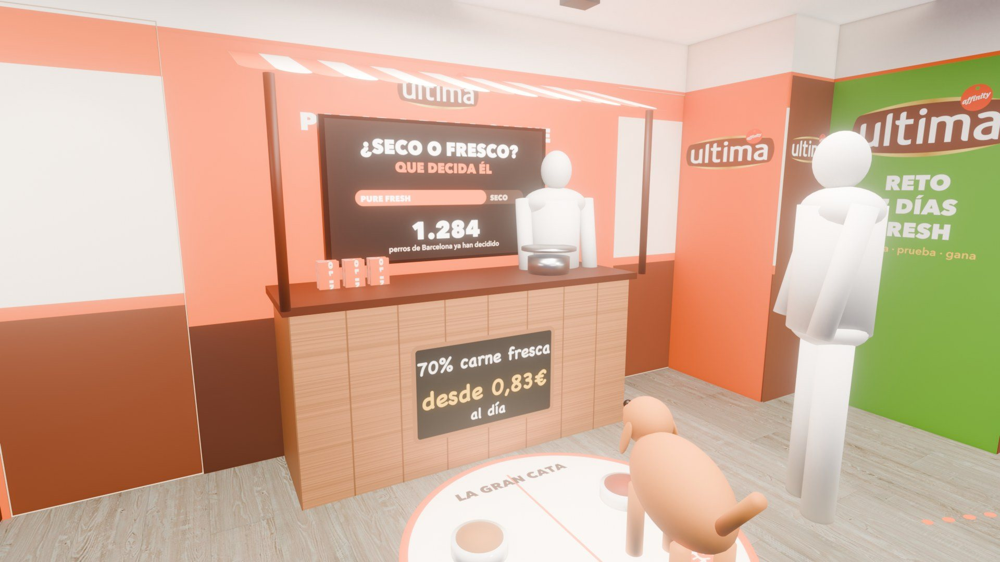

1
Parada de la Carne · pared B4
El Perro Decide
Dos comederos idénticos: uno con su pienso seco habitual y otro con Pure Fresh. El perro elige y una cámara cenital lo graba a cámara lenta. El dueño se lleva el vídeo, y el resultado suma a un marcador en directo con todos los perros de Barcelona.
Dopamina ●●●Oxitocina ●●


Es la prueba más directa del claim de palatabilidad, y quien la hace es el perro, no la marca. La incertidumbre de "¿a cuál irá?" es dopamina para el dueño, y ver a su perro elegir con ganas le da orgullo y ternura.
UbicaciónPared B4 · 280 cm
Superficie2,0 × 2,0 m
Duración3 min por perro
Capacidad~15 catas/hora
Staff1 tendero
MuestraMINI / MEDMAX
Con mascota
- Check-in con la app (QR en la parada). Se carga la ficha del perro: nombre, tamaño y alergias.
- El tendero sirve 5 g de cada comida en dos cuencos iguales desde la báscula de mercado del mostrador.
- Cuenta atrás en la pantalla y el dueño suelta al perro. La BowlCam lo graba desde arriba a 120 fps.
- Elija lo que elija, gana: vídeo en la app, Certificado de Catador Oficial y la muestra adecuada a su tamaño.
- La pantalla actualiza el marcador de la ciudad en directo.
Sin mascota · Nariz contra Nariz
- Cinco cajas de olfato cerradas: pollo asado, salmón, manzana, guisante y calabaza. Hay que adivinar con la nariz humana.
- La pantalla compara 6 millones de receptores humanos con unos 300 millones del perro: "Imagina lo que huele él".
- Con 3 aciertos o más, ficha extra para el Plinko. Siempre se lleva muestra para el perro que espera en casa.
- Desde la app puede reservar una franja para volver con su perro.
Guion del tendero
- 00:00"¡Bon dia! Hoy aquí manda él. ¿Cómo se llama?"
- 00:30"En un cuenco tiene lo de siempre y en el otro, 70% carne fresca. Él no sabe cuál es cuál."
- 01:00"3, 2, 1… ¡que decida!" (silencio, cámara lenta)
- 01:30"¡Qué nariz! Aquí tienes su vídeo y su certificado de catador."
- 02:30"Su muestra ya está en tu app. Si la acaba en 7 días, tienes premio."
Escenografía y producción
- Mostrador de mercado de madera de 200 × 60 × 95 cm, con frontal de pizarra.
- Toldo de lona a rayas sobre dos postes de 2 m.
- Pantalla de 55" con el marcador en directo y gráfica en la pared B4 (dibond 280 × 222).
- BowlCam cenital (cámara de acción 4K a 120 fps) con brazo al techo.
- Alfombra vinílica de cata de Ø 150 antideslizante, 2 cuencos de cerámica y cuencos desechables.
- Báscula de mercado decorativa y sobres de muestra en exposición.
Capa app
- Reserva de franja con perro y ficha previa del perro.
- Vídeo slow-motion con marco de marca, listo para stories.
- Insignia Catador Oficial y marcador de la ciudad visible en la app.
- Activación automática del Reto 7 Días Fresh.
Contenido y UGC
- Cientos de reacciones reales para un supercut de lanzamiento, siempre con consentimiento de imagen.
- Formato serie "Que decida él" para redes de la marca, un perro por día.
- Pantalla del marcador hacia el interior, visible al entrar.
KPIs de la parada
- Catas realizadas y su porcentaje sobre las visitas con perro.
- Vídeos descargados y compartidos.
- Elecciones registradas, con su redacción validada por legal.
- Muestras entregadas por tamaño.
Para superar la expectativa
- La Noche de la Cata: un evento de apertura con perros influencers de Barcelona y el marcador a cero.
- Certificado impreso con la foto de su elección, firmado por "el tendero".
- Mapa de barrios: el marcador se desglosa por distritos de Barcelona en la app.
| Riesgo | Mitigación |
|---|---|
| El marcador se lee como un estudio de preferencia | Presentarlo como juego ("perros que ya han decidido"), sin porcentaje como claim. Redacción aprobada por legal. |
| Alergias o dietas veterinarias | Pregunta obligatoria en la ficha de la app. Si hay restricción, se hace la versión sin mascota. |
| Perro nervioso o que no come | Ninguna presión: siempre hay certificado y muestra. El educador canino decide si se hace la cata. |